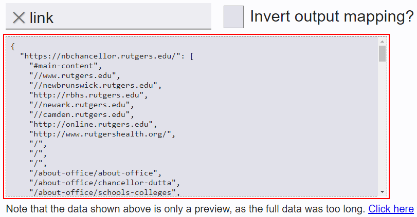

Table of Contents:
Running the Script:
-
Copy the script by :
'use strict'; const startTime = performance.now(); /* Polyfill iteration on HTMLCollections for Edge and other browsers: */ (function() { const getIter = (cnstr) => cnstr.prototype[Symbol.iterator]; const createIter = (cnstr) => { if (!getIter(cnstr)) { cnstr.prototype[Symbol.iterator] = getIter(Array); } }; [HTMLCollection, NodeList].forEach(createIter); }()); /* A helper function which throws a pre-baked error message when the parameter * ambiguousVar does not match the type specified by desiredType: */ function validateType(ambiguousVar, desiredType, nameStr = "variable") { /* Validate the type of nameStr: */ if (typeof nameStr !== 'string') { throw new TypeError( `nameStr must be a string. Instead, its type was '${typeof nameStr}'.` ); } let isCorrectType = false; let desiredTypeStr; const validationStyle = typeof desiredType; /* Check whether we are validating the type against a string (with typeof) or * a constructor function (with instanceof): */ if (validationStyle === 'string') { isCorrectType = (typeof ambiguousVar === desiredType); desiredTypeStr = desiredType; } else if ( validationStyle === 'function' && desiredType.prototype !== undefined ) { desiredTypeStr = desiredType.name; isCorrectType = (ambiguousVar instanceof desiredType); } else { /* Throw a TypeError because desiredType has an invalid type: */ throw new TypeError( `desiredType must be a string (matching the typeof to validate against) `+ `or a constructor function (matching the instanceof to `+ `validate against). Instead, its type was: ${validationStyle}.` ); } /* Type is valid, so return the variable: */ if (isCorrectType) { return ambiguousVar; } /* Type is invalid, so throw an error: */ let wrongType = typeof ambiguousVar; /* Special case for null, which has type 'object' for legacy reasons: */ if (ambiguousVar === null) wrongType = "null pointer"; /* If ambiguousVar is an object, report its constructor name for better * clarity in the error message: */ else if (wrongType === 'object') wrongType = ambiguousVar.constructor.name; /* Actually throw the meaningful error: */ throw new TypeError( `${nameStr} must be of type "${desiredTypeStr}"! `+ `Instead, it was of type "${wrongType}".` ); } /* Warn the user about navigating away during crawl: */ window.addEventListener("beforeunload", function (e) { /* Note: In modern browsers, these messages are ignored as a security feature, * and a default message is displayed instead. */ const confirmationMessage = ( "Warning: Navigating away from the page during a site-crawl will cancel "+ "the crawl, losing all progress. Are you sure you want to continue?" ); e.returnValue = confirmationMessage; // Gecko, Trident, Chrome 34+ return confirmationMessage; // Gecko, WebKit, Chrome <34 }); const DOMAIN = window.location.origin; const HOSTNAME = window.location.hostname.toLowerCase(); const PROTOCOL = window.location.protocol; /* Settings variables: */ const RECOGNIZED_FILE_TYPES = [ "doc", "docx", "gif", "jpeg", "jpg", "pdf", "png", "ppt", "pptx", "xls", "xlsm", "xlsx" ]; const RECOGNIZED_SCHEMES = ["mailto:", "file:", "tel:", "javascript:"]; const BANNED_STRINGS = { list: ["drupaldev"], forceBanned: null, isStringBanned(str) { if (this.forceBanned !== null) { validateType(this.forceBanned, 'boolean', "Banned string forced value"); return this.forceBanned; } for (let i = 0, len = this.list.length; i < len; ++i) { const bannedStr = this.list[i]; if (str.toLowerCase().indexOf(bannedStr.toLowerCase()) !== -1) { return bannedStr; } } return false; } }; const MAX_TIMEOUT = 60*1000; //Miliseconds let crawlTerminatedBeforeCompletion = false; const allRequests = []; /* A function which aborts any live requests at the time of execution: */ const QUIT = (noisy)=>{ crawlTerminatedBeforeCompletion = true; for (let r = 0, len = allRequests.length; r < len; ++r) { const request = allRequests[r]; /* If the request has already completed, don't abort it */ if (request.readyState === 4) continue; request.abortedDueToTimeout = true; request.abort(); if (noisy) { console.warn(`Aborting request at index ${r} of allRequests`); } } }; /* Aliasing, so that a user can more easily stop a runaway crawl: */ // const Quit = QUIT; const quit = QUIT; // const EXIT = QUIT; const Exit = QUIT; const exit = QUIT; /* Set a timer to end all live requests when the timer is reached. */ const TIMEOUT_TIMER = window.setTimeout(()=>QUIT(true), MAX_TIMEOUT); function urlRemoveAnchor(locationObj) { if (typeof locationObj === 'string') { /* For some reason, creating a link with an empty string for an href makes * that link think it refers to the current page. In other words, an empty * href behaves like "/". So we have to manually avoid this behavior to * avoid associating a null link with a refresh link. */ if (locationObj === "") return ""; return urlRemoveAnchor(makeElement("a", undefined, {href: locationObj})); } return locationObj.origin + locationObj.pathname + locationObj.search; } /* Because Sets do not store their values directly as own-properties, * Object.freeze is not enough to make the Set immutable. We instead have to * manually override the mutator functions to throw errors: */ function freezeSet(mySet) { mySet.add = function() { throw new Error("Cannot add to read only Set."); }; mySet.clear = function () { throw new Error("Cannot clear read only Set."); }; mySet.delete = function () { throw new Error("Cannot delete from read only Set."); }; Object.freeze(mySet); return mySet; } /* Defines an unwritable, unconfigurable property on classConstructor, but only * if that property doesn't already exist. Returns true on success (the property * was created) and false on failure (the property already existed): */ function staticConst(classConstructor, varName, value) { if (classConstructor[varName]) { return false; } Object.defineProperty(classConstructor, varName, { value: (typeof value === "function") ? value() : value, writable: false, enumerable: true, configurable: false }); return true; } /* Checks if obj has a defined property for the key prop. If it does, the * the optional onExistence function, if it is defined, is called on that * property's value. Then, the value is returned. If there is not a defined * value for the given key, the key is assigned the value given by val. If val * is a function, it is executed with no parameters, and its return value is * used instead. */ const makeIfUndef = function (obj, prop, val, onExistence) { const existingVal = obj[prop]; if (existingVal === undefined) { const newVal = (typeof val === "function") ? val() : val; obj[prop] = newVal; return newVal; } if (onExistence !== undefined) onExistence(existingVal); return existingVal; }; /* Add the value val to the array specified by obj[arrName]. If there is not a * array defined there already, an empty one is made and val is added to it: */ const maybeArrayPush = function (obj, arrName, val) { makeIfUndef(obj, arrName, ()=>[]).push(val); }; /* Returns either an element's href property, or its src property, whichever is * isn't undefined. Throws an error if both or neither of them are defined. * Note hrefs are returned without an anchor (the part after the #, if present).*/ function getHrefOrSrcProp(ele, retainAnchor) { validateType(ele, HTMLElement, "element"); if ((ele.href !== undefined) && (ele.src !== undefined)) throw new Error("Element with href AND src!?!"); //@debug if (ele.href !== undefined) { return (retainAnchor ? ele.href : urlRemoveAnchor(ele)); } if (ele.src !== undefined) { return ele.src; } throw new TypeError(`elementInDocument must have either an href or a \ source.`); } /* Similar to above, except returns the attribute instead of the property: */ function getHrefOrSrcAttr(ele) { validateType(ele, HTMLElement, "element"); if ((ele.href !== undefined) && (ele.src !== undefined)) throw new Error("Element with href AND src!?!"); //@debug for (const attrName of ["href", "src"]) { const attrVal = ele.getAttribute(attrName); if (attrVal !== null) return attrVal; } /* Null links may very well have a null href, so there's no reason to throw an * error. */ return null; } /* Labels which apply to all elements in the same group. For example, links * are grouped by the page they point to. Two or more links may point to the * same page while having different HREFs (e.g. one absolute and one relative), * so if one of them 404s (notFound), all of the others will too. */ const GROUP_LABELS = freezeSet(new Set([ "link", "image", "iframe", "internal", "external", "null", "Email", "localFile", "javascriptLink", "http-httpsError", "unusualScheme", "visited", "unknownContentType", "redirects", "accessDenied", "forbidden", "notFound", "robotsDisallowed", "unloaded", "file" ])); /* Groups together element records. This is used for grouping links/images with * the same href/src. */ class RecordGroup { constructor (name, ...elementRecords) { this.name = name; this.records = elementRecords; this.labels = new Set(); staticConst(this.constructor, "LabelTable", ()=>Object.create(null)); } static validateLabel (label) { if (GROUP_LABELS.has(label)) { return label; } throw new Error(`"${label}" is not a valid record-group label!`); } addRecord(record) { this.records.push(record); } label(...newLabels) { for (const label of newLabels) { this.constructor.validateLabel(label); if (this.labels.has(label)) continue; this.labels.add(label); maybeArrayPush(this.constructor.LabelTable, label, this); } } isLabelled(label) { return this.labels.has(this.constructor.validateLabel(label)); } } /* Labels which only apply to particular elements, and may differ between * elements within the same group: */ const ELEMENT_LABELS = freezeSet(new Set([ "startPage", "bannedString", "absoluteInternal", "anchor", "improperSize", "noAltText", "emptyTitle" ])); /* Associates a document, set of labels, and a group with a given HTML Element: */ class ElementRecord { constructor(documentID, elementInDocument, eleToGroupName) { /* Default function for converting an element into a string ID: */ if (eleToGroupName === undefined) { eleToGroupName = getHrefOrSrcProp; } /* These two tables are class variables used for retrieving records or * groups based on labels or group-names, respectively: */ staticConst(this.constructor, "GroupTable", ()=>Object.create(null)); staticConst(this.constructor, "LabelTable", ()=>Object.create(null)); /* Properties: */ this.document = documentID; /* Clone the element so that we don't have ot hold a reference to the * entire document in memory, thus allowing documents to be garbage- * collected when they're done being processed: */ this.element = elementInDocument.cloneNode("Deep"); const groupName = eleToGroupName(elementInDocument); this.group = makeIfUndef( this.constructor.GroupTable, groupName, ()=>new RecordGroup(groupName) ); this.group.addRecord(this); this.labels = new Set(); } static validateLabel (label) { if (ELEMENT_LABELS.has(label)) { return label; } throw new Error(`"${label}" is not a valid element-record label.`); } label(...newLabels) { for (const label of newLabels) { this.constructor.validateLabel(label); if (this.labels.has(label)) continue; this.labels.add(label); maybeArrayPush(this.constructor.LabelTable, label, this); } } isLabelled(label) { return this.labels.has(this.constructor.validateLabel(label)); } } /* Returns an array of all records matching a label, regardless of whether that * label is an element or group label. For group labels, each matching group * has all of its member records appended to the returned list. */ const getAllRecordsLabelled = (label)=>{ let recordList; if (ELEMENT_LABELS.has(label)) { const tableEntry = ElementRecord.LabelTable[label]; if (tableEntry === undefined) return null; /* Shallow copy array, for consistency with group-label behvaior. * That is to say, modifying the returned list will not affect the actual * record tables. */ recordList = tableEntry.slice(0); } else if (GROUP_LABELS.has(label)) { recordList = []; const groups = RecordGroup.LabelTable[label]; if (groups === undefined) return null; /* Take each matching group, and then append each group's list of records * to recordList. This gives us every record in a group matching a given * group label: */ for (const group of groups) { for (const record of group.records) recordList.push(record); } } else { /* If there is no matching label for either elements or groups: */ return null; } return recordList; }; /** * DOM Manipulation */ /* A function for appending an array of children to a parent HTMLElement: */ function appendChildren(parent, children) { function appendItem(item) { if (item instanceof HTMLElement) { parent.appendChild(item); } /* Otherwise, coerce item into a string and make a text node out of it. * Then, append that text node to parent: */ else { const text = document.createTextNode(String(item)); parent.appendChild(text); } } if (Array.isArray(children)) { for (let i = 0, len = children.length; i < len; ++i) { appendItem(children[i]); } } else { appendItem(children); } } /* Makes an HTML element with content. This is similar to the * document.createElement() method, but allows text or other elements to * be added as a child in-place. Multiple children may be specified by * using an array. The optional attrObj parameter allows for attributes * such as id, class, src, and href to also be specified in-place. */ function makeElement(type, content, attrObj) { const newEle = document.createElement(type); if (content !== undefined) { appendChildren(newEle, content); } if (attrObj !== undefined) { validateType(attrObj, 'object', "Attribute Object"); for (const attribute of Object.keys(attrObj)) { newEle.setAttribute(attribute, attrObj[attribute]); } } return newEle; } /* Removes all of an element's immediate children: */ function clearChildren(parent) { while (parent.firstChild !== null) { parent.removeChild(parent.firstChild); } } /* Make new style sheet for modal: * * NOTE: This CSS is a minified version of the CSS found in crlr.js.css. If * you want to make changes to it, edit that file and minify it before * pasting it here. */ const CRAWLER_CSS = `#crlr-modal,#crlr-modal *{all:initial;box-sizing:border-box}#crlr-modal address,#crlr-modal blockquote,#crlr-modal div,#crlr-modal dl,#crlr-modal fieldset,#crlr-modal form,#crlr-modal h1,#crlr-modal h2,#crlr-modal h3,#crlr-modal h4,#crlr-modal h5,#crlr-modal h6,#crlr-modal hr,#crlr-modal noscript,#crlr-modal ol,#crlr-modal p,#crlr-modal pre,#crlr-modal table,#crlr-modal ul{display:block}#crlr-modal h1{font-size:2em;font-weight:700;margin-top:.67em;margin-bottom:.67em}#crlr-modal h2{font-size:1.5em;font-weight:700;margin-top:.83em;margin-bottom:.83em}#crlr-modal h3{font-size:1.17em;font-weight:700;margin-top:1em;margin-bottom:1em}#crlr-modal h4{font-weight:700;margin-top:1.33em;margin-bottom:1.33em}#crlr-modal h5{font-size:.83em;font-weight:700;margin-top:1.67em;margin-bottom:1.67em}#crlr-modal h6{font-size:.67em;font-weight:700;margin-top:2.33em;margin-bottom:2.33em}#crlr-modal *{font-family:sans-serif}#crlr-modal pre,#crlr-modal pre *{font-family:monospace;white-space:pre}#crlr-modal a:link{color:#00e;text-decoration:underline}#crlr-modal a:visited{color:#551a8b}#crlr-modal a:hover{color:#8b0000}#crlr-modal a:active{color:red}#crlr-modal a:focus{outline:#a6c7ff dotted 2px}#crlr-modal{border:5px solid #0000a3;border-radius:1em;background-color:#fcfcfe;position:fixed;z-index:99999999999999;top:2em;bottom:2em;left:2em;right:2em;margin:0;overflow:hidden;color:#222;box-shadow:2px 2px 6px 1px rgba(0,0,0,.4);display:flex;flex-direction:column}#crlr-modal.waiting-for-results{bottom:auto;right:auto;display:table;padding:1em}#crlr-modal #crlr-min{border:1px solid gray;padding:.5em;border-radius:5px;background-color:rgba(0,0,20,.1)}#crlr-modal #crlr-min:hover{border-color:#00f;background-color:rgba(0,0,20,.2)}#crlr-modal #crlr-min:focus{box-shadow:0 0 0 1px #a6c7ff;border-color:#a6c7ff}#crlr-modal .flex-row{display:flex}#crlr-modal .flex-row>*{margin-top:0;margin-bottom:0;margin-right:16px}#crlr-modal .flex-row>:last-child{margin-right:0}#crlr-modal #crlr-header{align-items:flex-end;padding:.5em;border-bottom:1px dotted grey;width:100%;background-color:#e1e1ea}#crlr-modal #crlr-header #crlr-header-msg{align-items:baseline}#crlr-modal #crlr-content{flex:1;padding:1em;overflow-y:auto;overflow-x:hidden}#crlr-modal #crlr-content>*{margin-bottom:10px}#crlr-modal #crlr-content>:last-child{margin-bottom:0}#crlr-modal.minimized :not(#crlr-min){display:none}#crlr-modal.minimized #crlr-header{display:flex;margin:0;border:none}#crlr-modal.minimized{display:table;background-color:#e1e1ea;opacity:.2;transition:opacity .2s}#crlr-modal.minimized:focus-within,#crlr-modal.minimized:hover{opacity:1}#crlr-modal.minimized #crlr-min{margin:0}#crlr-modal #crlr-inputs *{font-size:1.25em}#crlr-modal #crlr-input-clear{background-color:#ededf2;margin-right:.25em;padding:0 .25em;border:none;font-size:1em;text-shadow:.5px 1px 2px rgba(0,0,0,.4)}#crlr-modal #crlr-input-clear:active{box-shadow:inset 1px 1px 2px 1px rgba(0,0,0,.25);text-shadow:none}#crlr-modal #crlr-input-clear:focus{outline:#a6c7ff solid 2px}#crlr-modal #crlr-textbox-controls{border:2px solid transparent;border-bottom:2px solid #b0b0b0;background-color:#ededf2;transition:border .2s}#crlr-modal #crlr-textbox-controls.focus-within,#crlr-modal #crlr-textbox-controls:focus-within{border:2px solid #a6c7ff}#crlr-input-textbox{background-color:transparent;border:none}#crlr-modal #crlr-autocomplete-list{display:none}#crlr-modal input[type=checkbox]{opacity:0;margin:0}#crlr-modal input[type=checkbox]+label{padding-top:.1em;padding-bottom:.1em;padding-left:1.75em;position:relative;align-self:center}#crlr-modal input[type=checkbox]+label::before{position:absolute;left:.125em;height:1.4em;top:0;border:1px solid gray;padding:0 .2em;line-height:1.4em;background-color:#e1e1ea;content:"✓";font-weight:700;color:transparent;display:block}#crlr-modal input[type=checkbox]:checked+label::before{color:#222}#crlr-modal input[type=checkbox]:focus+label::before{box-shadow:0 0 0 1px #a6c7ff;border-color:#a6c7ff}#crlr-modal input[type=checkbox]:active+label::before{box-shadow:inset 1px 1px 2px 1px rgba(0,0,0,.25)}#crlr-modal .crlr-output{display:inline-block;max-width:100%}#crlr-modal .crlr-output>pre{max-height:200px;padding:.5em;overflow:auto;border:1px dashed gray;background-color:#e1e1ea}#crlr-modal.browser-gecko .crlr-output>pre{overflow-y:scroll}`; const styleEle = makeElement("style", CRAWLER_CSS, {id: "crlr.js.css"}); document.head.appendChild(styleEle); /* Make modal element: */ const MODAL = makeElement("div", undefined, {id: "crlr-modal"}); document.body.insertBefore(MODAL, document.body.childNodes[0]); /* Prevent click events on the modal triggering events on the rest of the page: */ const cancelBubble = (e)=>{ if (!e) e = window.event; e.cancelBubble = true; if (e.stopPropagation) e.stopPropagation(); }; MODAL.addEventListener("click", cancelBubble); MODAL.addEventListener("keydown", cancelBubble); MODAL.addEventListener("keypress", cancelBubble); /* For browser-specific CSS and formatting: */ const isBrowserWebkit = /webkit/i.test(navigator.userAgent); MODAL.classList.add(isBrowserWebkit ? "browser-webkit" : "browser-gecko"); /* Adds a counter to the modal, showing the number of live (unresolved) http * requests currently waiting: */ const requestCounter = (function() { /* Create display: */ const disp = makeElement("p", undefined, { id: "request-counter", title: "Number of page requests currently loading" }); const waitingClassString = "waiting-for-results"; let initialized = false; /* Methods to allow other code to affect the counter: */ const API = { displayElement: disp, count: 0, update() { /* To avoid repainting more often than necessary: */ window.requestAnimationFrame(()=>{ disp.innerHTML = `Requests: ${this.count}`; }); if (initialized && this.count === 0) { this.setText("All requests complete!"); window.clearTimeout(TIMEOUT_TIMER); presentResults(); } }, increment() { ++this.count; this.update(); }, decrement() { if (this.count <= 0) { throw new Error("DECREMENTED COUNTER BELOW ZERO"); } --this.count; this.update(); }, setText(text) { disp.innerHTML = text; }, remove() { MODAL.removeChild(disp); MODAL.classList.remove(waitingClassString); } }; API.update(); MODAL.classList.add(waitingClassString); MODAL.appendChild(disp); initialized = true; return API; }()); /** * Crawling functions: */ /* Finds all of the links in a document and classifies them * based on the contents of their hrefs: */ function classifyLinks(doc, curPageURL) { const LINKS = doc.getElementsByTagName("a"); /* Contains the URLs of all of the local (same-domain) pages linked to from * this page: */ const internalLinksFromThisPage = []; /* A quick function for visibly labelling certain types of elements: */ function markElement(ele, color, text) { ele.style.outline = `2px solid ${color}`; if (ele.title) ele.title += "\n"; ele.title += text; } /* Loop over links: */ for (const link of LINKS) { const hrefAttr = link.getAttribute("href"); const linkRecord = new ElementRecord(curPageURL, link); linkRecord.group.label("link"); /* Handle links with no HREF attribute, such as anchors or those used as * buttons: */ if (hrefAttr === null) { linkRecord.group.label("null"); markElement(link, "orange", "Null link"); continue; } const bannedStr = BANNED_STRINGS.isStringBanned(link.href); if (bannedStr) { linkRecord.label("bannedString"); console.error(`Found link ${hrefAttr} containing a banned string: \ ${bannedStr}.\n\tLinked-to from: ${curPageURL}`); markElement(link, "red", "BANNED STRING LINK"); /* Don't parse the link further. Banned-string links will not be crawled. */ continue; } const linkIsAbsolute = (hrefAttr === link.href.toLowerCase()); const linkProtocol = link.protocol.toLowerCase(); const linkIsToWebsite = /^https?:$/i.test(linkProtocol); const linkIsInternal = (linkIsToWebsite && (link.hostname.toLowerCase() === HOSTNAME)); /* Anchor link: */ if (link.hash !== "") { linkRecord.label("anchor"); markElement(link, "pink", "Anchor link"); } if (linkIsInternal) { linkRecord.group.label("internal"); if (linkProtocol === PROTOCOL) { /* Store this record for return, because it is internal with a matching * protocol, so its page should be checked in visitLinks: */ internalLinksFromThisPage.push(linkRecord); } else { linkRecord.group.label("http-httpsError"); } if (linkIsAbsolute) { if (link.matches(".field-name-field-related-links a")) { console.warn("absint link in related links", link); continue; //@debug } linkRecord.label("absoluteInternal"); } } else if (linkIsToWebsite) { linkRecord.group.label("external"); } else { if (RECOGNIZED_SCHEMES.indexOf(linkProtocol) === -1) { linkRecord.group.label("unusualScheme"); markElement(link, "gray", "Unusual Scheme"); } switch (linkProtocol) { case "mailto:": linkRecord.group.label("Email"); markElement(link, "yellow", "Email link"); break; case "file:": linkRecord.group.label("localFile"); markElement(link, "blue", "File link"); break; case "javascript:": linkRecord.group.label("javascriptLink"); break; case "tel:": markElement(link, "darkBlue", "Telephone Link"); break; default: markElement(link, "darkGray", "Unusual Scheme"); } } } //Close for loop iterating over link elements return internalLinksFromThisPage; } //Close function classifyLinks class ImageLoader { constructor(src) { staticConst(this.constructor, "SrcTable", ()=>Object.create(null)); /* If another ImageLoader has been created for the given src, reuse it: */ const existingLoader = this.constructor.SrcTable[src]; if (existingLoader !== undefined) { return existingLoader; } this.constructor.SrcTable[src] = this; this.element = makeElement("img"); this.loaded = this.errored = false; /* For the timeout and quit function, so that ImageLoaders can be * treated identically to XMLHttpRequests: */ this.readyState = 0; requestCounter.increment(); allRequests.push(this); this.element.onload = ()=>{ this.loaded = true; this.readyState = 4; requestCounter.decrement(); }; this.element.onerror = ()=>{ this.errored = true; this.readyState = 4; requestCounter.decrement(); }; /* Set the src attribute last to guarantee loading doesn't begin until the * onload/error event handlers have been set: */ this.element.setAttribute("src", src); } whenReady(normCallback, errCallback) { /* If the image has already loaded or errored, we still want the callbacks * to be executed asynchronously (for consistency). However, we don't want * the resultsModal to show up while one of these callbacks is waiting to * fire, so we treat each such callback as a tiny little request. This * function automatically increments the requestCounter synchronously, to * block the modal, and decrements it after the callback has fired: */ const wrapAsRequest = (func)=>{ requestCounter.increment(); const reqObj = {readyState: 0}; const timer = window.setTimeout(()=>{ func(); reqObj.readyState = 4; requestCounter.decrement(); }); reqObj.abort = function() { if (reqObj.readyState === 4) return; reqObj.readyState = 4; window.clearTimeout(timer); requestCounter.decrement(); }; allRequests.push(reqObj); }; if (this.loaded) wrapAsRequest(normCallback); else if (this.errored) wrapAsRequest(errCallback); else { /* When multiple events are queued using addEventListener, they are * executed **synchronously** in the order of attachment. Since control * flow can't be yielded between event handlers, we don't have to worry * about incrementing and decrementing the requestCounter for each one. */ this.element.addEventListener("load", normCallback); if (errCallback !== undefined) { this.element.addEventListener("error", errCallback); } } } abort() { if (!(this.loaded || this.errored)) { /* Removing the src attribute does not fire the onerror event, so we must * manually decrement the requestCounter: */ this.element.removeAttribute("src"); requestCounter.decrement(); } } } function classifyImages(doc, curPageURL) { const IMAGES = doc.getElementsByTagName("img"); for (const image of IMAGES) { const imageRecord = new ElementRecord(curPageURL, image); imageRecord.group.label("image"); const srcProp = image.src; const srcAttr = image.getAttribute("src"); if (srcAttr === null) { imageRecord.group.label("null"); continue; } /* Images don't naturally have location properties, so use the URL api: */ const imgLocation = new URL(srcProp); const imgSrcHostname = imgLocation.hostname.toLowerCase(); const isInternal = (imgSrcHostname === HOSTNAME); /* Unfortunately, whether an image is available or broken must be determined * asynchronously: */ const imgLoader = new ImageLoader(image.src); if (!imageRecord.group.isLabelled("visited")) { const onload = ()=>{ imageRecord.group.label("visited"); }; const onerror = ()=>{ imageRecord.group.label("unloaded", "visited"); }; imgLoader.whenReady(onload, onerror); } /* Check whether the displayed size of this particular img element matches * the native size of this image: */ const widthAttr = image.getAttribute("width"); const heightAttr = image.getAttribute("height"); const anyDimensionsSpecified = (widthAttr !== null || heightAttr !== null); const compareImageSize = ()=>{ const loadEle = imgLoader.element; const widthMatches = ( widthAttr === null || Number(widthAttr) === loadEle.naturalWidth ); const heightMatches = ( heightAttr === null || Number(heightAttr) === loadEle.naturalHeight ); if (!(widthMatches && heightMatches)) { imageRecord.label("improperSize"); } }; if (anyDimensionsSpecified) imgLoader.whenReady(compareImageSize); if (!image.alt) { //if (image.getAttribute("alt") === null) { imageRecord.label("noAltText"); } if (BANNED_STRINGS.isStringBanned(srcProp)) { imageRecord.label("bannedString"); } if (isInternal) { imageRecord.group.label("internal"); if (srcProp === srcAttr) { imageRecord.label("absoluteInternal"); } } else { imageRecord.group.label("external"); } if (imgLocation.protocol === 'file:') { imageRecord.group.label("localFile"); } else if (imgLocation.protocol !== PROTOCOL){ imageRecord.group.label("http-httpsError"); } }//Close for loop iterating over images }//Close function classifyImages function classifyOther(doc, curPageURL) { const IFRAMES = doc.getElementsByTagName("iframe"); for (const iframe of IFRAMES) { const eleRecord = new ElementRecord(curPageURL, iframe); eleRecord.group.label("iframe"); const srcProp = iframe.src; const srcAttr = iframe.getAttribute("src"); if (srcAttr === null) { eleRecord.group.label("null"); continue; } const iframeLocation = new URL(srcProp); const iframeSrcHostname = iframeLocation.hostname.toLowerCase(); const isInternal = (iframeSrcHostname === HOSTNAME); if (!iframe.title) { eleRecord.label("emptyTitle"); } if (BANNED_STRINGS.isStringBanned(srcProp)) { eleRecord.label("bannedString"); } if (isInternal) { eleRecord.group.label("internal"); if (srcProp === srcAttr) { eleRecord.label("absoluteInternal"); } } else { eleRecord.group.label("external"); } if (iframeLocation.protocol === 'file:') { eleRecord.group.label("localFile"); } else if (iframeLocation.protocol !== PROTOCOL){ eleRecord.group.label("http-httpsError"); } }//Close for loop iterating over iframes }//Close function classifyOther /* Makes requests to the HREFs of links in LinkElementList, and handles the * results of the request. * * Each valid document response is parsed by classifyLinks (and images) to * generate a new list of internal URLs, each of which is checked recursively. * * The same page will not be requested twice. */ function visitLinks(RecordList, curPage, robotsTxt, recursive) { /* Parameter defaults: * If no robots.txt handler is passed, just create one which will assume all * crawling is allowed: */ if (robotsTxt === undefined) { robotsTxt = new RobotsTxt(); robotsTxt.ignoreFile = true; } if (recursive === undefined) { recursive = true; } /** * Callbacks: */ /* Before the full requested-resource is loaded, we can view the response * header for information such as the data type of the resource * (e.g. text/html vs application/pdf) and use that information to make * decisions on how to proceed w/o having to let the entire file be loaded. */ const checkRequestHeaders = (pageRecordGroup, request)=>{ /* Checks if the request resolved to a file rather than an HTML document: */ function findURLExtension(url) { for (let i = url.length - 1; i >= 0; --i) { if (url.charAt(i) === ".") return url.substring(i+1).toLowerCase(); } return undefined; } /* First, check the request's file extension: */ const extension = findURLExtension(request.responseURL); const isRecognizedFile = (RECOGNIZED_FILE_TYPES.indexOf(extension) !== -1); if (isRecognizedFile) { pageRecordGroup.label("file"); } /* Then, check the request's content-type: */ const contentType = request.getResponseHeader("Content-Type"); const validContentType = "text/html"; if (!contentType.startsWith(validContentType)) { if (!isRecognizedFile) { pageRecordGroup.label("unknownContentType"); } request.resolvedToFile = true; request.abort(); } }; /* Handle normal, valid page responses: */ const normalResponseHandler = (pageRecordGroup, pageURL, pageDOM, request)=>{ if (!pageDOM) { console.error( "Null response from " + pageURL + ". It may be an unrecognized file type." + "\n\tIt was linked-to from " + curPage ); console.error(request); return; } if (recursive) { /* Check images on the given page: */ classifyImages(pageDOM, pageURL); classifyOther(pageDOM, pageURL); /* Recursively check the links found on the given page: */ const newLinks = classifyLinks(pageDOM, pageURL); visitLinks(newLinks, pageURL, robotsTxt); } }; /* Handle responses that are errors (e.g. Not Found, Forbidden, etc.): */ const errorHandler = (pageRecordGroup, pageURL, request)=>{ /* If we aborted the request early due to the header telling us the * resource is a file, we shouldn't log another error, as everything * should've already been handled by checkRequestHeaders. */ if (request.resolvedToFile) return; if (request.abortedDueToTimeout) return; /* Otherwise, something went wrong with the request: */ if (request.readyState !== 4) { console.error("AN UNIDENTIFIED READYSTATE ERROR OCURRED!", request); throw new Error( "AN UNIDENTIFIED READYSTATE ERROR OCURRED!" + JSON.stringify(request) ); } const errType = request.status; const msgHead = `A ${errType} Error occurred when requesting ${pageURL}. `; let msg = ""; switch (request.status) { case 0: pageRecordGroup.label("redirects"); msg = `The request to ${pageURL} caused an undefined error. `; msg += "The url probably either redirects to an external site, or is "; msg += "invalid. There may also be a networking issue, or another "; msg += "problem entirely.\nUnfortunately, this script cannot "; msg += "distinguish between those possibilities."; break; case 400: pageRecordGroup.label("badRequest"); msg = `${msgHead}That means the request sent to the server was `; msg += "malformed or corrupted."; break; case 401: pageRecordGroup.label("accessDenied"); msg = `${msgHead}That means access was denied to the client by the `; msg += "server."; break; case 403: pageRecordGroup.label("forbidden"); msg = `${msgHead}That means the server considers access to the `; msg += "resource to be absolutely forbidden."; break; case 404: pageRecordGroup.label("notFound"); msg = `${msgHead}That means the server could not find the given page.`; break; default: console.error("AN UNIDENTIFIED ERROR OCURRED!", request); return; } console.error(msg + "\n\tLinked-to from: " + curPage); }; /* When the request resolves, regardless of whether the response was an error, * mark the request as complete and decrement the request counter: */ const onComplete = (request)=>{ request.callbackComplete = true; requestCounter.decrement(); }; console.log(`Checking links found on: ${curPage}`); for (const linkRecord of RecordList) { validateType(linkRecord, ElementRecord, "Items in RecordList"); const URLOfPageToVisit = urlRemoveAnchor(linkRecord.element); /* The RecordGroup for linkRecord: */ const pageData = linkRecord.group; /* Check if visiting this link is allowed by the robots.txt handler: */ if (!robotsTxt.isUrlAllowed(URLOfPageToVisit)) { pageData.label("robotsDisallowed"); continue; } /* Do not re-analyze a page we have already visited: */ if (pageData.isLabelled("visited")) { continue; } pageData.label("visited"); /** * Making the HTTP Request: */ const httpRequest = new XMLHttpRequest(); allRequests.push(httpRequest); /* Start filing request: */ httpRequest.onreadystatechange = function() { if (httpRequest.readyState === XMLHttpRequest.HEADERS_RECEIVED) { checkRequestHeaders( pageData, //Loop Parameter httpRequest //Request Parameter ); } if (httpRequest.readyState !== XMLHttpRequest.DONE) { return; } if (httpRequest.status === 200) { //Code for "Good" normalResponseHandler( pageData, URLOfPageToVisit, //Loop Parameters httpRequest.responseXML, httpRequest //Request Parameters ); } else { errorHandler( pageData, URLOfPageToVisit, //Loop Parameters httpRequest //Request Parameter ); } onComplete(httpRequest); }; httpRequest.open("GET", URLOfPageToVisit); httpRequest.responseType = "document"; httpRequest.send(); httpRequest.sent = true; requestCounter.increment(); } //Close for loop iterating over links /* Even if no local links were every found and requested, still update the * request counter, so that presentResults() will be called regardless: */ requestCounter.update(); } //Close function visitLinks /* Cuts the parameter string off at the given number of characters. If the * parameter string is already shorter than maxLen, it is returned without * modification. * * Optionally, you may specify a break-string at which the string will be cut. * If you do, the string will be cut just before the last instance of breakStr * before the cutoff-point. If no instance can be found, an empty string is * returned. */ function cutOff(str, maxLen, breakStr) { let cutOffPoint = maxLen; /* If the string is already shorter than maxLen: */ if (cutOffPoint > str.length) return str; /* If no break-string is given, cutOffPoint right on the character: */ if (breakStr === undefined) return str.substring(0, cutOffPoint); cutOffPoint = str.lastIndexOf(breakStr, cutOffPoint); /* If the breakStr character can't be found, return an empty string: */ if (cutOffPoint === -1) return ""; return str.substring(0, cutOffPoint); } /* This is called when the crawling is fully complete. it is the last * part of the script ot be executed: */ function presentResults() { /* Create a document fragment to contain all of our DOM manipulation on the * modal while in-progress. This avoids constantly repainting the document * while changes are still being made: */ const ModalBuffer = document.createDocumentFragment(); /* Create button for minimizing modal so that the site can be used normally: * (The text is a minimize symbol, resembling "_")*/ const minimizeButton = makeElement("button", "🗕", {id: "crlr-min"}); minimizeButton.type = "button"; minimizeButton.onclick = () => MODAL.classList.toggle("minimized"); /* Make the modal header, containing the minimize button, the title, etc.: */ let headerStr = "Results"; headerStr += (crawlTerminatedBeforeCompletion) ? " (incomplete):" : ":"; const modalTitle = makeElement("h1", headerStr, {id: "crlr-title"}); const modalHeaderMsg = makeElement("div", modalTitle, { id: "crlr-header-msg", class: "flex-row" } ); const modalHeader = makeElement("header", [minimizeButton, modalHeaderMsg], { id: "crlr-header", class: "flex-row" } ); ModalBuffer.appendChild(modalHeader); /* Make the modal content, for presenting crawl data and controls for viewing * that data: */ const modalContent = makeElement("div", undefined, {id: "crlr-content"}); ModalBuffer.appendChild(modalContent); /* Create textbox for specifying desired output: */ const autoCompleteItems = []; let requiredLength = 0; const optionElementFromLabel = (label, labelTable)=>{ const labelHasMembers = (labelTable[label] !== undefined); /* Gecko browsers (Firefox, Edge, etc.) will display the label rather than * the value in the drop-down list if both are present, whereas webkit * browsers (Chrome and Safari) will display both, with the label to the * right and slightly faded. To ensure all users see the same info, We use * different labels for the different browser engines: */ let optionEleLabelProp; if (labelHasMembers) { optionEleLabelProp = ""; } else { optionEleLabelProp = (isBrowserWebkit) ? "Empty" : `${label} (Empty)`; } const optionEle = makeElement( "option", undefined, { value: label, label: optionEleLabelProp } ); return optionEle; }; /* Iterate over Group labels, then iterate over Element labels: * (The order doesn't actually matter.) */ for (const label of GROUP_LABELS) { requiredLength = Math.max(requiredLength, label.length); autoCompleteItems.push( optionElementFromLabel(label, RecordGroup.LabelTable) ); } for (const label of ELEMENT_LABELS) { requiredLength = Math.max(requiredLength, label.length); autoCompleteItems.push( optionElementFromLabel(label, ElementRecord.LabelTable) ); } /* Make the textbox for inputting the name of the object you want to view: */ const clearInputButton = makeElement( "button", "✕", //"x" cross symbol { id: "crlr-input-clear", "data-for": "crlr-input-textbox" } ); const autoCompleteList = makeElement( "datalist", autoCompleteItems, { id: "crlr-autocomplete-list" } ); const inputTextBox = makeElement( "input", undefined, { id: "crlr-input-textbox", type: "text", value: "link", list: "crlr-autocomplete-list", size: requiredLength } ); const logObjInputContainer = makeElement( "div", [clearInputButton, autoCompleteList, inputTextBox], { id: "crlr-textbox-controls", } ); clearInputButton.addEventListener( "click", function clearInput() { inputTextBox.value = ""; inputTextBox.focus(); } ); /* For browsers without support for :focus-within: */ logObjInputContainer.addEventListener( "focusin", function addFocus() { logObjInputContainer.classList.add("focus-within"); } ); logObjInputContainer.addEventListener( "focusout", function remFocus() { logObjInputContainer.classList.remove("focus-within"); } ); const altFormatCheckBox = makeElement( "input", undefined, { id: "crlr-data-alt-format-checkbox", type: "checkbox", } ); const checkBoxLabel = makeElement( "label", "Invert output mapping?", { for: "crlr-data-alt-format-checkbox" } ); const inputRow = makeElement( "div", [logObjInputContainer, altFormatCheckBox, checkBoxLabel], { id: "crlr-inputs", class: "flex-row" } ); /* Use as a mouse-down event on any element to prevent higlighting via * double- or triple-clicking. */ function preventClickToHighlight(event) { if (event.detail > 1) { event.preventDefault(); } } altFormatCheckBox.onmousedown = preventClickToHighlight; checkBoxLabel .onmousedown = preventClickToHighlight; /* Create containers for output: */ const pre = makeElement("pre"); const preCont = makeElement("div", pre, {class: "crlr-output"}); const dlLinkPara = makeElement("p"); appendChildren( modalContent, [inputRow, preCont, dlLinkPara] ); /* Returns an object which maps a page's href to an array of hrefs/srcs of * elements on that page which match the given label. If the invertMapping * parameter is truthy, that mapping is inverted, so that an element's href/ * src maps to an array of documents containing that element: */ const collectDataForLabel = (label, invertMapping)=>{ const recordList = getAllRecordsLabelled(label); const labelData = Object.create(null); if (recordList !== null) { for (const record of recordList) { let key, val; /* Map from from a given URL to URLs of pages which contain a link whose * HREF matches the given URL (i.e. link -> [pages]): */ if (invertMapping) { /* Use the property here, so that absolute and relative elements * correspond to the same key. If the label is anchor, don't remove * the anchor from hrefs of links: */ const retainAnchor = (label === "anchor"); key = getHrefOrSrcProp(record.element, retainAnchor); val = record.document; } /* Map from page URL to HREFs of links on that page * (i.e. page -> [links]): */ else { key = record.document; /* Use the attribute here, so that relative elements can be founded by * using ctrl + f on the DOM: */ val = getHrefOrSrcAttr(record.element); } maybeArrayPush(labelData, key, val); } } return labelData; }; /* For handling the output of logging objects to the user: */ const updateOutput = (function() { let usingAltFormat; function outputDataToModal(label) { const MAX_OUTPUT_LENGTH = 5000; /* Main JSON Preview output: */ const objForLabel = collectDataForLabel(label, usingAltFormat); const objJSON = JSON.stringify(objForLabel, null, 2); const previewTooLong = (objJSON.length > MAX_OUTPUT_LENGTH); let objJSONPreview = objJSON; if (previewTooLong) { objJSONPreview = cutOff(objJSON, MAX_OUTPUT_LENGTH, "\n"); objJSONPreview += "\n..."; } pre.innerHTML = objJSONPreview; /* Prepare data for the download link and the text around it: */ let beforeLinkText = ""; let linkText; let afterLinkText = ""; if (previewTooLong) { beforeLinkText = "Note that the data shown above is only a preview, "; beforeLinkText += "as the full data was too long. "; linkText = "Click here"; afterLinkText = " to download the full JSON file."; } else { linkText = "Download JSON"; } const blob = new Blob([objJSON], {type: 'application/json'}); const url = URL.createObjectURL(blob); let downloadName = window.location.hostname.replace(/^www\./i, ""); downloadName += "_" + label; if (crawlTerminatedBeforeCompletion) downloadName += "_(INCOMPLETE)"; downloadName +=".json"; const dlLink = makeElement( "a", linkText, { href: url, download: downloadName, class: "crlr-download" } ); clearChildren(dlLinkPara); appendChildren(dlLinkPara, [beforeLinkText, dlLink, afterLinkText]); } /* Reads which log object to output, what format to use, and calls * outputLogObjToModal to actually change what is shown to the user: */ return function updateOutput() { const wantedLabel = inputTextBox.value; /* If the user has not inputted a valid label, don't change the currently * displayed data (they may be in the middle of typing): */ if (!ELEMENT_LABELS.has(wantedLabel) && !GROUP_LABELS.has(wantedLabel)) { return; } usingAltFormat = altFormatCheckBox.checked; outputDataToModal(wantedLabel); }; }());//Close closure /* Call the function immediately so that the data for the default label * is displayed immediately: */ updateOutput(); inputTextBox.addEventListener("input", updateOutput); altFormatCheckBox.addEventListener("change", updateOutput); /* Add how long the crawler took to the header: */ const endTime = performance.now(); const runningTime = Math.round((endTime - startTime)/10)/100; const timeInfoEle = makeElement( "p", `(Crawling took ${runningTime} seconds)`, {id: "crlr-time"} ); modalHeaderMsg.appendChild(timeInfoEle); /* Remove the counter now that requests are finished */ requestCounter.remove(); /* Paint the completed buffer to the document/screen: */ MODAL.appendChild(ModalBuffer); } /** * Robots.txt-related functions: */ function RobotsTxt() { this.rawText = undefined; this.fileRead = false; this.ignoreFile = false; this.patterns = { allow: [], disallow: [], sitemap: [] }; /* Methods: */ /* @Static */ this.parseText = function (rawText) { const disallowed = []; const allowed = []; const sitemap = []; const lines = rawText.split(/[\n\r]/); /* Do allow and disallow statements in this block apply to us? I.e. are they * preceded by a user-agent statement which matches us? */ let validUserAgentSection = true; for (let i = 0, len = lines.length; i < len; ++i) { const line = lines[i].trim(); /* Skip empty and comment lines: */ if (line.length === 0 || line.charAt(0) === "#") continue; /* Split the line by the first colon ":": */ const parsedLine = (function() { const splitPoint = line.indexOf(":"); if (splitPoint === -1) { return undefined; } const firstHalf = line.substring(0, splitPoint); const secondHalf = line.substring(splitPoint + 1); return [firstHalf, secondHalf]; }()); if (parsedLine === undefined) { console.warn(`Don't understand: "${line}"`); } const clauseType = parsedLine[0].trim().toLowerCase(); const clauseValue = parsedLine[1].trim(); /* Check for sitemaps before checking the user agent so that they are always * visible to us: */ if (clauseType === "sitemap") { sitemap.push(clauseValue); } /* Make sure the user agent matches this crawler: */ else if (clauseType === "user-agent") { validUserAgentSection = (clauseValue === "*"); } /* Skip the remaining section until a matching user-agent directive is * found: */ else if (!validUserAgentSection) { continue; } /* If the line is a disallow clause, add the pattern to the array of * disallowed patterns: */ else if (clauseType === "disallow") { /* An empty disallow string is considered equal to a global allow. */ if (clauseValue === "") { allowed.push("/"); } else { disallowed.push(clauseValue); } } /* If the line is an allow clause, add the pattern to the array of * allowed patterns: */ else if (clauseType === "allow") { allowed.push(clauseValue); } else { console.warn(`Unknown clause: "${line}"`); } } return { allow: allowed, disallow: disallowed, sitemap: sitemap }; }; /* @Static */ this.matchesPattern = function (str, basePattern) { let parsedPattern = basePattern; /* If a pattern ends in "$", the string must end with the pattern to match: * * E.G. "/*.php$" will match "/files/documents/letter.php" but * won't match "/files/my.php.data/settings.txt". */ const REQUIRE_END_WITH_PATTERN = (parsedPattern.charAt(parsedPattern.length-1) === "$"); if (REQUIRE_END_WITH_PATTERN) { /* Remove the $ character from the pattern: */ parsedPattern = parsedPattern.substr(0, parsedPattern.length-1); } /* Removing trailing asterisks, which are extraneous: */ for (let i = parsedPattern.length-1; /*@noConditional*/; --i) { /* If the entire pattern is asterisks, then anything will match: */ if (i <= 0) return true; if (parsedPattern.charAt(i) !== "*") { parsedPattern = parsedPattern.substr(0, i+1); break; } } const patternSections = parsedPattern.split("*"); let patternIndex = 0; for (let strIndex = 0, len = str.length; strIndex < len; /*@noIncrement*/) { const subPat = patternSections[patternIndex]; /*Skip empty patterns: */ if (subPat === "") { ++patternIndex; continue; } if (subPat === str.substr(strIndex, subPat.length)) { ++patternIndex; strIndex += subPat.length; /* If we've reached the end of the pattern: */ if (patternIndex === patternSections.length) { if (REQUIRE_END_WITH_PATTERN) { return (strIndex === len); } /* Otherwise, the pattern is definitely a match: */ return true; } } /* If this sub-pattern didn't match at this point, move 1 character over: */ else { ++strIndex; } } /* If we reached the end of the string without finishing the pattern, it's * not a match: */ return false; }; this.isUrlAllowed = function (fullUrl) { if (HOSTNAME !== (new URL(fullUrl)).hostname.toLowerCase()) { throw new Error("URL " + fullUrl + " is not within the same domain!"); } if (this.ignoreFile) return true; /* The path portion of the fullURL. That is, the part * following the ".com" or ".net" or ".edu" or whatever. * * For example, on a site's homepage, the path is "/", and * on an faq page, it might be "/faq.html" */ const pagePath = fullUrl.substr(DOMAIN.length); //@Refactor use location api? /* Allow statements supersede disallow statements, so we can * check the allowed list first and shortcut to true if we * find a match: */ for (let i = 0, len = this.patterns.allow.length; i < len; ++i) { const pattern = this.patterns.allow[i]; if (this.matchesPattern(pagePath, pattern)) return true; } for (let i = 0, len = this.patterns.disallow.length; i < len; ++i) { const pattern = this.patterns.disallow[i]; if (this.matchesPattern(pagePath, pattern)) return false; } /* If this page is on neither the allowed nor disallowed * list, then we can assume it's allowed: */ return true; }; this.requestAndParse = function (onComplete) { if (this.ignoreFile) { /* Ensure asynchronous execution: */ window.setTimeout(onComplete(null)); return; } const httpRequest = new XMLHttpRequest(); httpRequest.onreadystatechange = () => { if (httpRequest.readyState === XMLHttpRequest.DONE) { if (httpRequest.status === 200) { //Code for "Good" this.rawText = httpRequest.responseText; this.patterns = this.parseText(this.rawText); } else { this.rawText = null; } this.fileRead = true; onComplete(this); } }; httpRequest.open("GET", "/robots.txt"); httpRequest.send(); }; } const robotsTxtHandler = new RobotsTxt(); function startCrawl(flagStr, robotsTxt=robotsTxtHandler) { /* Handle flags: */ /* Ignore robots.txt directives */ if (/-ignoreRobots\.?Txt\b/i.test(flagStr)) { robotsTxt.ignoreFile = true; } /* Ignore the banned string list? */ if (/-ignoreBannedStr(?:ing)?s?\b/i.test(flagStr)) { BANNED_STRINGS.forceBanned = false; } /* Ignore the script timeout timer? If this flag is set, the crawl will run * indefinitely, until either no unvisited links are found or the browser runs * out of memory. */ if (/-ignore(?:Timeout|Timer)\b/i.test(flagStr)) { window.clearTimeout(TIMEOUT_TIMER); } /* Crawl only the current page? Note that requests will still be made for * internal pages linked-to from the starter page, for the sake of detecting * network/request errors, but those pages will not be checked themselves. */ let recursiveCrawl = true; if (/-(?:single|one|1)(?:Page|Pg)\b/i.test(flagStr)) { recursiveCrawl = false; } /* Add disallow rules to the robots.txt handler. This is useful for excluding * large/infinite URL spaces (e.g. maps, extremely long paginated lists). * * NOTE: This flag is handled in the requestAndParse callback, because * the requestAndParse function completely overwrites the patterns property. */ const disallowMatch = /-disallow(["'`])([^"\n]+)\1/i.exec(flagStr); let userDisallowed; if (disallowMatch === null) { userDisallowed = []; } else { userDisallowed = disallowMatch[2].split(/\s*[,]\s*/); } /* Setup robotsTxt handler and start the crawl: */ robotsTxt.requestAndParse(function afterRobotsTxtParse() { /* Handle disallowMatchFlag AFTER parsing, because parsing overwrites the * patterns property: */ robotsTxt.patterns.disallow.push(...userDisallowed); Object.freeze(robotsTxt); const anchorlessURL = urlRemoveAnchor(window.location); classifyImages(document, anchorlessURL); classifyOther(document, anchorlessURL); const initialPageLinks = classifyLinks(document, anchorlessURL); /* A spoof link to mark the page where the crawl started as visited, so that * it will not be crawled a second time: */ const initLabel = "(Initial page for crawler script)"; const startPageSpoofLink = makeElement( "a", initLabel, {href: anchorlessURL} ); const spoofLinkRecord = new ElementRecord(anchorlessURL, startPageSpoofLink); spoofLinkRecord.group.label("visited"); spoofLinkRecord.label("startPage"); visitLinks(initialPageLinks, anchorlessURL, robotsTxt, recursiveCrawl); }); } startCrawl(""); Open the site which you want to inspect. Make sure you're using an up-to-date version of Chrome or Firefox.
-
Open your browser's JavaScript console. To do this, press ctrl-shift-i and go to the "console" tab. See below:
-
Ensure you are not logged into the site you are crawling.
Make sure you are not logged in to the site you are crawling. The reason for this is to prevent the script from crawling administration pages or accidentally taking actions like clearing the cache or editing pages
Note that I haven't ever observed the script editing or deleting pages when running the script while logged in accidentally. I believe there are validation measures in place which prevent this from occurring. However, you should still be careful. Even if nothing went wrong, there are often thousands of administration pages on any site, and there's a good chance the script will time out, trigger DDoS protection, and/or produce totally worthlessly overstuffed data
If you accidentally start the script while logged in, simply refresh the page immediately. You will get a prompt asking you if you want to leave the site. Just press enter or click “Yes†and the browser will refresh. Then, make sure nothing catastrophic happened (nothing should have) and be more careful next time.
You may wish to run the script in your browser's “Incognito†or Private mode to reduce the chances of any such issues in the first place.
-
Paste the script into the browser's console.
In some browser's (namely Firefox at the time of writing) you will get a warning for pasting something in. This is a security feature. Simply follow the on-screen instructions to bypass it.
If you are concerned about the security implications of copying and pasting a large script into your browser, the main assurance I can offer you is that the script cannot escape the tab/window it was run in, cannot request information from any site besides the one it started in (even from other Rutgers sites), and you should already be completely logged out from the current site before running the script, so it could not collect any personal information even if it wanted to.
You can also view the full, commented source-code of the script and assure yourself that no suspicious code is there.
Depending on the computer you're using, there may be some noticeable lag when pasting in the script, due to the large amount of text.
-
If desired, add in any flags you want in the script's last line:
To view the list of flags and their functionalities, click here.
-
Press enter (ctrl-enter in some browsers) to start the script. You should immediately see a small, blue-bordered box appear in the top left of the browser window, and rapid printouts in the console:
-
You may see warnings and errors (yellow and red colored log statements, respectively). This is normal, as the crawler may log warnings and errors when it runs into unexpected content or network errors. Usually, the crawler will stil finish normally and report useful information. If you do not know how to interpret these log statements, simply ignore them, and continue as described below.
-
-
If any dialogue boxes appear, hold enter.
Hold enter while the script runs so that any dialogue boxes which appear are canceled immediately.
Dialogue boxes mainly appear if the server wants extra credentials (username/password) for requesting a page. Unfortunately, the crawler script can't close these boxes for you, and can't know ahead of time which resources require credentials and which don't. Generally, you don't need to crawl these pages, so you don't need to know or enter the credentials.
-
Wait for the crawling to complete.
It will complete when the number of active requests (shown in the blue-bordered box in the top left) reaches 0.
-
Note that this number isn't a strict indication of progress. The number of active requests can oscillate up and down during the crawl as more pages are discovered and checked. The number may also stall for a few seconds at points. This is usually fine, but may indicate a network error or a bug in the crawler script.
If the number does not change for more than 20 seconds or so, please try resetting the browser, checking your internet connection, and running the script again. If that fails, please report the issue to a developer, and/or file a bug report on GitHub.
-
When the script completes, you will see a results modal:

-
The modal will cover the page and follow you if you attempt to scroll the page under it. If you want to see the page, click the button with the "_" symbol at the top-left of the modal. This will minimize it. If you click on the site again afterwards, the modal will become translucent:

-
The Results Modal:
When the crawler finishes running, it will generate an interactive modal which contains information collected during the crawl. This section discusses the various parts of the modal interface.
-
Minimize Button:

The minimize button is used to hide the contents of the modal, so that the page underneath it can still be interacted with normally without opening a new browser tab or window. Clicking it will hide the modal, except for the button, which will remain visible, though translucent. Clicking the button again will re-open the modal, unchanged.
-
Label Selection Textbox

The crawler labels each of the links, images, and other elements it checks. To view a list of labels and their meanings, click here. You can view all of the data under each label by typing the label's name into the textbox. By default, the label chosen is "link", which makes the modal show all links found on the site during the crawl.
You can empty the textbox by clicking on the large "✖" button at the left of the textbox. Double-clicking on the textbox, or pressing the down-arrow key, while it is empty will bring up a complete list of labels:
Labels which have no corresponding results are marked as "(Empty)". Clicking on one of the drop-down options will auto-fill the textbox.
-
Invert Output Mapping

Ordinarily, the output of the crawler is given as a list of URLs representing pages on the site crawled, each of which maps to another list of URLs, these representing the HREFs of links or the Src's of images which are on that page (and which have the specified label). This default mapping is useful for going through pages one-by-one and fixing all of the issues on that page.
When the "Invert Output Mapping" checkbox is checked, this order is reversed. The output is transformed into a list of URLs corresponding to HREFs or Src's, each mapping to a list of pages on which the corresponding link or image is found. This alternate mapping is useful for finding all of the instances of a given link or image, so they can be changed one-by-one.
-
Output Preview Box
The list of page URLs and link/image HREFs/Src's is shown in the middle of the modal. If the list is too long, it is truncated to avoid lagging the browser. If it is small enough, the full output will be displayed. See above for an explanation of the formatting of the output.
You can tell whether the output is truncated by either reading the paragraph below the preview box, or by checking the last line of output in the box. If the output is truncated, the last line will contain an ellipses "
...". If the output is complete, it will contain a closing curly brace "}".If you would like to view the full output, you can right click on the download link below the preview box and click "Open in new tab".
-
Download Message

Below the output preview box is a paragraph which explains whether the currently shown output is a preview or if it is complete. Either way, the paragraph will contain a download link. Clicking this link will bring up your browser's file-download dialogue box, allowing you to quickly save the results (for a given label) of a crawl, so that it can be reviewed later.
The file will be saved as .JSON file, which is simply a plain-text format that can be viewed in any text editor.
You can also view the full output of a crawl by right-clicking on the download link and clicking "Open in new tab" in the drop-down menu.
Result Labels:
The crawler works by checking each image and link (and some other types of elements) on each page that it finds. These elements are recorded and given different labels based on properties of interest, such as whether a link points to an internal page or an external site.
You can view all of the elements with a given label by typing the label's name into the textbox on the results modal after a crawl has completed. See above for more info.
Here are all of the different labels currently implemented, their meanings, and information on how they should be fixed, if they signify issues with the site:
link: Refers to all elements found during the crawl which are
<a>tags. These are regular hyper-links that you can click on to go to another page, like this. This label includes both internal and external links found on the site. Note that this tag doesn't refer to<link>elements, which serve a separate function and aren't normally visible on a page.image: Refers to all
imgelements found.iframe: Refers to all
iframeelements found. These elements are used for embedding another page's or site's contents within a page. These are often used for embedding video or social-media streams.-
internal: Refers to all links and iframes which point to a page within the same domain, as well as images which are hosted on the same domain. "Domain" refers to the part of a site's URL before the first forward slash
/.For example, these pages are all on the same domain:
https://nbchancellor.rutgers.edu/ https://nbchancellor.rutgers.edu/news-announcements/news-and-communications https://nbchancellor.rutgers.edu/about-office/about-office...That domain being "https://nbchancellor.rutgers.edu". However, these pages are all on separate domains:
https://nbchancellor.rutgers.edu/ https://www.rutgers.edu/ https://newbrunswick.rutgers.edu/Only pages internal to the domain on which the crawler was started can be crawled, due to security constraints placed on the script by the browser.
external: Refers to all links, iframes, and images which point to resources that are hosted on a different domain than the one on which the crawler was started. See above for an explanation of domains.
null: Refers to all links with empty HREF attributes, and all iframes and images with ampty src attributes. Null links are sometimes used as buttons, but they may still be unintentional. They usually do not cause major issues, though. Null images and iframes are rare, and should probably be removed.
Email: Refers to links to email addresses. Clicking one of these will usually bring up your operating system's default email client, opening a draft message to the speficied recipient. These links are usually intentional as contact points, though public disclosure of a private email address may be a concern.
localFile: Refers to erroneous links and images whose URLs start with "file://" instead of "https://". These links refer to resources local to an editor's computer, and are usually caused by mistakes, where an editor attempts to embed a file without actually uploading it to the site. They do not work at all for normal users, so they must be removed or replaced with the appropriate file once it has been properly uploaded to the site.
javascriptLink: Refers to links whose URLs start with "JavaScript:" instead of "https://". These links will execute the JavaScript included in the URL when they are clicked. These rarely cause problems, but their use in new code is discouraged, since they can cause code duplication and are not semantically clear. Instead, use
<button>s with event-handlers attached in a script usingelement.addEventListener. However, fixing existing links is not generally necessary or productive.http-httpsError: Refers to links, images, or iframes which use "http://" when the site has been loaded under https, or vice-versa. These are usually non-issues, but may cause security warnings to the user. As such, they should be fixed by replacing the "http://" with "https://".
unusualScheme: Refers to links with otherwise unrecognized protocols or schemes. The protocol/scheme is the string that comes before the first colon
:in a URL, such as "http", "https", "mailto", "file", etc. Links found here are not necessarily erroneous, but they should probably be investigated to make sure they're behaving as intended.visited: Refers to all links and images which the crawler has checked. Note that only local links are included as only local links can be crawled. External images can and are stil checked by the crawler, however.
unknownContentType: Refers to links which refer to resources that aren't of a known content type. "Content-type" refers to the MIME-type of file the server returns, e.g. text/html, image/png, video/mp4, etc. Links in this category usually are not issues, as they tend to just be more exotic, though still valid content types. Still, these links should be investigated manually to ensure they are working as intended.
redirects: Refers to links which initially appeared to be internal and valid for the crawler to check, but which are redirected by the server to external and/or invalid resources, causing a network error when requested. These are usually fine on the user's end, but may indicate a link causing some undefined network error.
-
accessDenied: Refers to links which point to resources that the server requires some credentials to access. When these links are clicked or requested by the crawler, a dialogue box will appear in the browser asking for a username and password.
These are rarely unintended, but they do cause issues for the crawler, as these dialogue boxes can't be closed by the crawler itself, but can halt its progress. If these appear during a crawl, please close them promptly by pressing space or enter.
forbidden: Refers to links which point to resources that the server considers forbidden to access. These are usually issues, as they indicate a link in a public-section of the site that will always cause a 403 error if clicked. Generally, these links should just be removed, but in some cases, the resource referred to should be changed so that it isn't forbidden. Ask the project manager what to the appropriate action is.
notFound: Refers to links which point to resources that the server cannot locate. In other words, "404: File not found". This may be caused by the resource not having been uploaded to the server, or by the link's href being misspelled. To fix these, attempt to locate the intended resource (page or file) and either upload it to the site at the appropriate address, or change the link to refer to the correct address.
robotsDisallowed: Refers to pages which the crawler knows about, but did not request and crawl due to the page being disallowed by the site's robots.txt file. For an explanation of the robots.txt file, click here.
unloaded: Refers to images which did not load properly when requested by the crawler. Generally, this indicates that the image file is either not found (equivalent to a 404 label) or is somehow corrupted. Fix these by either locating the correct resource or uploading it to the site, similar to how a notFound link is fixed.
file: Refers to a link which points to a resource which was determined by the crawler to be a known type of file, other than an html file. The crawler, by default, recognizes a few common file types:
- doc
- docx
- gif
- jpeg
- jpg
- png
- ppt
- pptx
- xls
- xlsm
- xlsx
startPage: Refers to the page on which the crawl was started. This will always be included, and represented as a single "fake" link to the starting URL from the starting URL. This fake link also appears in the "visited" label, but not in the "link" label.
-
bannedString: Refers to a link, image, or iframe whose URL contains a banned string. To learn more about banned strings, click here.
Note: Links containing banned strings are not crawled.
By default, this includes all links to Drupal dev sites. Live sites should contain all of their own content, and should not link/point to development sites, so these links/images/iframes should be corrected by duplicating the content from the dev site to the live site (if needed) and changing the link from an absolute dev-site link to a relative link.
If you are crawling a dev-site, you will need to either change the list of banned strings manually, or add the
-ignoreBannedStrflag, or else the crawler will not be able to crawl the site, as banned-string links are not crawled. absoluteInternal: Refers to links which which are internal to the site but still use an absolute URL. For example, a link with
href="https://www.rutgers.edu/academics"from "https://www.rutgers.edu/". These should be fixed by removing the origin part of the URL (e.g. leaving only "/academics").anchor: Refers to anchor links, which are links whose URLs contain a "#". These links will scroll to a specific point on a page after navigating to that page (if it is different from the current one).
improperSize: Refers to images which are displayed at non-native sizes. Images which are displayed at larger sizes than the original file should be avoided, as they are often blurry. Images which are displayed at smaller sizes than the original should be replaced with a manually down-scalled version of the image, as sending a larger image is a waste of bandwidth and data.
-
noAltText: Refers to images without an alt attribute. The "alt" attribute is an accessibility feature, and is used to describe the images to vision-impaired users relying on screen-readers. Alt text is also displayed when the image fails to load.
In general, all images should have alt text for the sake of accessibility. If you find an image without alt text, you should generally ask an editor or project manager to provide text, rather than writing it yourself.
-
emptyTitle: Refers to iframes without a title attribute. On iframes, the the title attribute is an accessibility feature used by screen-readers to inform the user about the contents of that iframe.
Similar to images without alt text, these iframes should be fixed by asking for appropriate title text, and applying it to the iframe.
Script Flags:
The crawler script accepts a few different flags which can modify its default behavior. You can input flags to the crawler by adding them to the string on the last line of the script, as shown below:
Note that flags are not case-sensistive. Additionally, some flags can be typed multiple different ways.
These are the different flags you can set for the crawler:
-ignoreRobotsTxt: By default, the crawler will request and obey a site's robots.txt file before beginning the crawl (e.g. www.rutgers.edu/robots.txt). This file asks web-crawlers, like those used by search engines, to not check and index certain pages, usually to save bandwidth and server resources. If you add this flag, the crawler will not request the robots.txt file, effectively ignoring it.-ignoreBannedStr: The crawler script contains an array of strings which are considered "banned" under the variableBANNED_STRINGS. By default, the list contains only "drupaldev". If a link's href or and image's src contains any of these strings, then that element will be logged under the bannedString category. Links containing banned strings will also not be crawled. This flag disables this behavior, treatingBANNED_STRINGSas an empty list.-ignoreTimer: By default, the crawler will terminate the crawl of it takes longer than 60 seconds. This typically only happens if the site is very large, the internet connection is very slow, or the site contains an infinite URL space, such as an event-calendar. This flag disables the timer, so that the crawl will not be stopped early.-onePage: This flag makes the crawler only check the current page. It will still request other pages linked to from the current one, but only to determine whether those links are valid. Use this when you do not want information on an entire site, and are only interested in the current page.-
-disallow'pattern, pattern, pattern...': This flag allows you to specify a list of extra robots.txt-styled disallowed patterns for the crawler to follow. For example, if you type:startCrawl("-disallow'/about/, /academics/'");the crawler will not crawl/check any pages located in the "about" or "academics" folders/groups. This flag is useful for excluding folders that contain large amounts of uninteresting content, such as event-calendars.